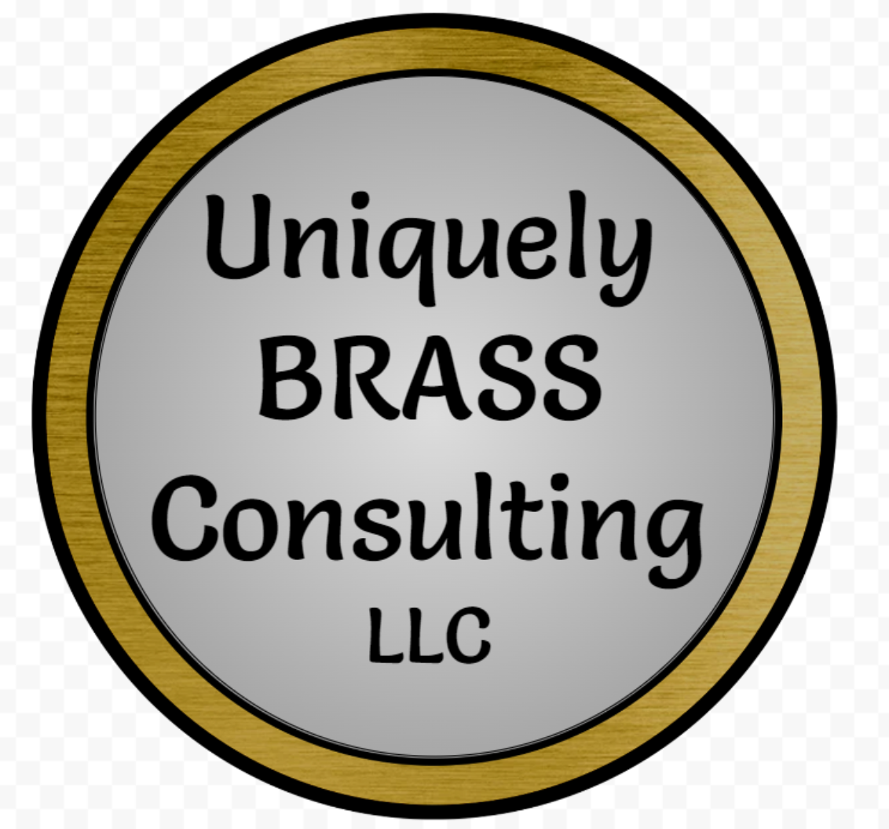

Training Topics
Our training sessions are structured around core components of effective classroom management. Each topic equips educators with practical strategies and tools that can be applied immediately to build and sustain a productive learning environment.
- Expectations/Rules – Establishing and communicating clear behavioral and academic expectations for students.
- Corrective Strategies – Addressing misbehavior effectively and consistently while maintaining a positive classroom tone.
- Procedures – Teaching students how to perform classroom routines that minimize disruptions and maximize learning time.
- Rewards – Creating meaningful systems that motivate students through positive reinforcement.
- Teaching Tips – Sharing expert advice on instruction, engagement, and classroom flow based on years of hands-on experience.
